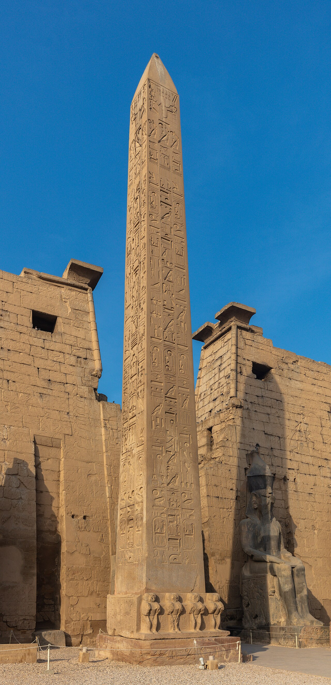
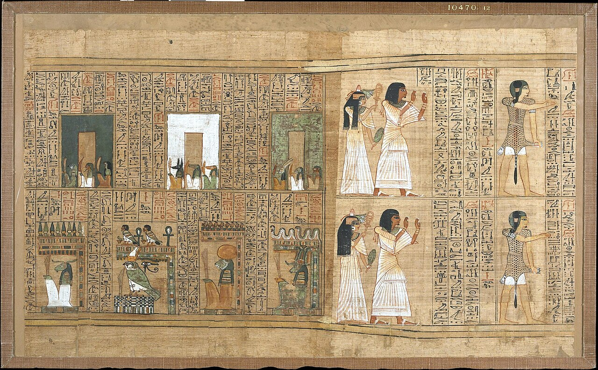
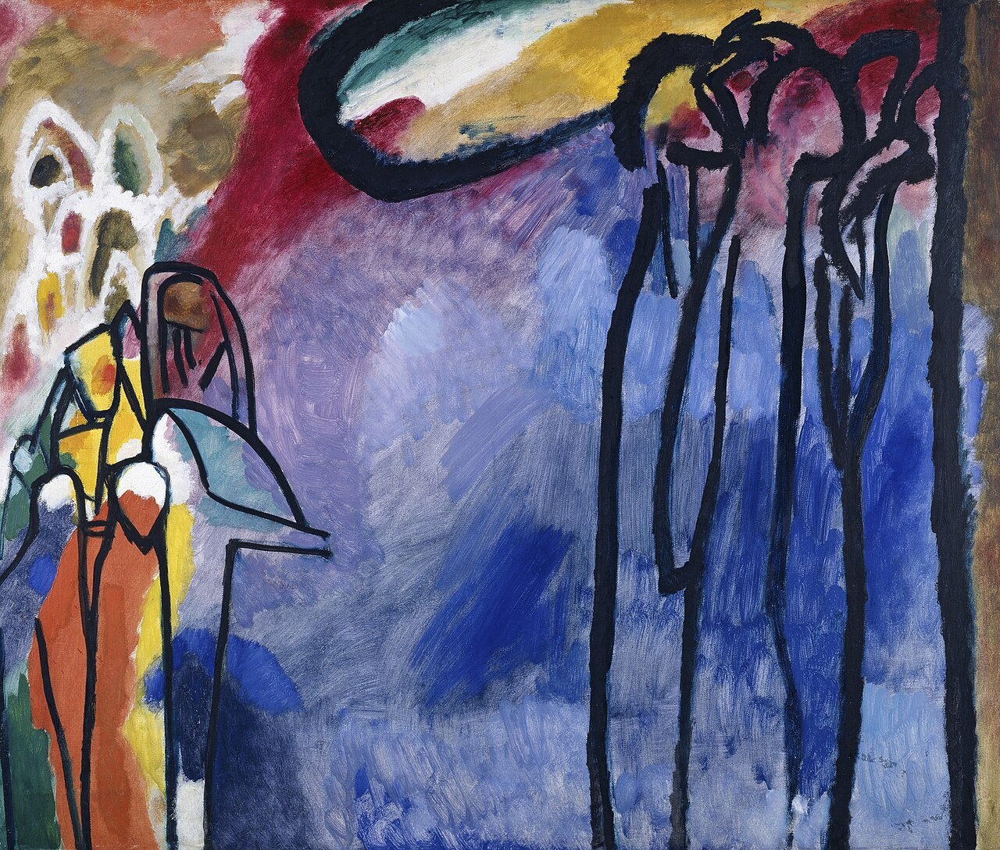

무엇을 말하느냐보다
무엇으로 말하느냐가 세계를 바꿈
00이 주차의 위상
이 주차는 후반부 전체의 설계도임. 이니스의 두 축이 14주차와 15주차를 미리 결정함.
- ① 손편지 ② 이메일 ③ 메신저 ④ 음성메시지 ⑤ AI에게 대신 쓰게 한 메시지
- 내용은 같은데, 같은 것인가. → 맥루언의 물음.
- 어느 것이 100년 뒤에도 남아 있겠는가. → 이니스의 물음.
- 토론토 대학 맥루언 문화기술연구소를 중심으로 함. 이니스 → 맥루언 → 데 케르코베.
- 세 사람은 공통 전제를 가짐 — 매체는 내용을 나르는 통로가 아니라 문명의 형태를 결정하는 환경임.
- 1주차의 "그릇 비유"가 여기서 결정적으로 깨짐.
01오늘 만날 개념
- 매체결정주의media determinism
- 어떤 매체를 쓰느냐가 사고방식·사회구조를 결정한다는 입장임. 강한 주장이라 논란도 많음. 오늘 비판도 함께 다룸.
- 시간 편향 · 공간 편향time / space biased
- 이니스의 구별. 오래 가는 매체와 멀리 가는 매체임.
- 구술성 · 문자성orality / literacy
- 말 중심 문화와 글 중심 문화임. 월터 옹의 구별.
- 2차 구술성secondary orality
- 라디오·TV 시대에 되살아난 구술성임. 단, 의도적·전략적이라는 점이 원래 구술성과 다름.
- 정세도definition
- 맥루언 용어. 매체가 제공하는 데이터의 밀도임. 해상도와 비슷함.
- 핫 · 쿨 미디어hot / cool media
- 핫은 정세도 높고 참여도 낮음. 쿨은 정세도 낮고 참여도 높음.
- 외파 · 내파explosion / implosion
- 밖으로 터짐과 안으로 오므라듦임.
- 테트라드tetrad
- 맥루언의 네 물음 — 강화 · 퇴화 · 부활 · 반전임.
- 모자이크식 사유mosaic thinking
- 선형적으로 이어가지 않고 조각들을 병치해 전체 형태를 보게 하는 사유임.
- 게슈탈트Gestalt
- 형태·전체. 부분의 합이 아니라 전체가 먼저 지각된다는 심리학임.
02시간 편향과 공간 편향
해롤드 이니스(1894~1952). 『캐나다 태평양 철도의 역사』, 『제국과 커뮤니케이션』, 『커뮤니케이션의 편향성』.
사회 조직, 문화 형성에 영향을 미침.
시간 편향적 매체
오래 가지만 못 움직임- 예 — 암벽(이집트 오벨리스크), 양피지(중세 유럽)
- 문명 성격 — 전통적 · 보수적 · 종교적 · 정신적
공간 편향적 매체
멀리 가지만 안 남음- 예 — 파피루스(로마), 인쇄된 종이(근대 유럽), 전자매체(현대)
- 문명 성격 — 개혁적 · 제국주의적 · 물리적 · 제도적


같은 '기록'인데 하나는 3,000년을 버티고 하나는 제국 전체를 돌아다님.
- 돌에 새긴 비문은 3,000년 갔음. 그런데 옮길 수 없음.
- 종이 신문은 하루 만에 전국에 갔음. 그런데 1년이면 삭음.
- 짧은 게시글은 1초 만에 지구를 돎. 그런데 서버가 닫히면 전부 사라짐.
- → 매체는 시간과 공간 중 하나를 선택하고, 그 선택이 문명의 성격이 됨.
03문명사와 후반부 설계도
| 문명 | 대표 매체 | 편향 | 권력 구조와 결과 |
|---|---|---|---|
| 이집트 BC3000~BC1000 | 석재·오벨리스크, 초기 파피루스 | 시간 | 사제·왕권 중심. 기록과 제의의 독점 → 내구성 높으나 확산성 낮음. 제도 경직, 변혁 둔화 |
| 로마 BC27~AD476 | 파피루스·도로·우편·법률문서 | 공간 | 행정·군사·법률 중심 관료제 → 확장성·속도는 높으나 지속성 약화. 기독교 중심의 시간 편향 재등장 |
| 중세 유럽 5~15C | 양피지·필사본·수도원 문헌 | 시간 | 교회·수도원의 문해 독점 → 종교적 폐쇄성·지식 독점. 인쇄술로 균열 |
| 근대 서구 15~19C | 종이·활판 인쇄 | 공간 | 지식의 대중화 → 르네상스·종교개혁·계몽주의. 그러나 상업·국가 중심의 새로운 독점 |
| 현대 20C 중반~ | 전신·라디오·TV·디지털 네트워크 | 공간 강화 | 정보산업·데이터 기반 지배 → 실시간성 극대화. '시간의 상실'과 '기억 부재' |
이니스의 테제 셋
- 매체 편향이 심화되면 문명이 몰락함 로마는 기독교 문명에 의해, 중세 유럽은 르네상스·계몽주의로.
- 매체 균형의 사례 — 고대 그리스 연설(토론)과 알파벳을 적절히 함께 썼음. 대화가 문자로 인한 지식 독점에 저항하며 민주주의를 수호했음. 이후 문자 편향으로 쇠락함 — 소크라테스(쓰지 않음) → 플라톤(대화편) → 아리스토텔레스(논문).
- 현대 서구 문명 기계화·상업화된 매체는 대부분 공간 편향적임. 시간성 회복이 필요함.
소크라테스는 쓰지 않았고, 플라톤은 대화를 글로 옮겼고, 아리스토텔레스는 논문을 썼음. 이니스는 이 순서를 "쇠락"이라 부름. 2주차 플라톤의 문자 비판이 여기서 문명사적 규모로 되돌아옴.
비릴리오 14주차
시간 축의 극한- "속도가 공간을 소멸시킴"
육후이 15주차
세 축의 종합- 재귀성 · 우연성 · 코스모테크닉스
04구술성과 문자성
월터 옹(1912~2003). 『구술문화와 문자문화』. 매체 형식이 커뮤니케이션에 깊이 내재되어 인간의 사고방식과 문화 형성에 영향을 미침.
| 차원 | 구술성 | 문자성 |
|---|---|---|
| 시간 | 구어는 지금-여기의 경험을 전달함(현전성). 삶의 개별 상황을 담음 | 쓰기는 시공간적 발화 상황과 맥락에서 분리됨 |
| 기억 | 기억할 수 있는 것만 전달됨. 집단 구전 형식 | 장기 보존과 기억이 가능함 |
| 참여 | 다수의 참여와 집단적 수용 | 생산자/수용자가 나뉨. 저자의 배타적 완결과 독자의 개인적 수용 |
외워야 하기 때문임. 정형구, 리듬, 반복은 기억 장치임. 글로 쓸 수 있게 되자 그 장치들이 사라졌음. 매체가 이야기의 형식을 정한 것임.
옹의 대조표
| 차원 | 구술성 | 문자성 |
|---|---|---|
| 감각 | 청각적 | 시각적 |
| 상황 | 즉흥적 | 계획적 |
| 참여적 | 객관적 | |
| 내용 | 주제 부가적 삽화 나열 | 주제 종속적 인과적 서술 |
| 반복적 | 시간적 | |
| 집합적 | 분석적 | |
| 사고방식 | 감정적 | 이성적 |
| 개별상황적 | 추상적 | |
| 보수적 항상성 | 개혁적 |
052차 구술성
- 라디오와 TV 등 전자 매체의 등장이 배경임.
- 인쇄문화의 시각성에서 벗어나 이전의 구술성과 청각문화를 복원함.
- 단, 자연스럽지 않은 의도적·전략적 구술성임. 대중을 의식함.
- 관계주의적 시각 — 인쇄와 전자매체의 상호관계 속에서 매체 문화가 진화함.
영상 창작자가 "여러분 안녕하세요"라고 말하는 것은 구술임. 그런데 대본이 있음. 즉흥처럼 들리도록 계획된 즉흥임. 이것이 옹이 말한 "의도적·전략적"임.
| 옹의 대조 항목 | 챗봇 대화에 적용하면 |
|---|---|
| 청각적 / 시각적 | 텍스트지만 음성 모드도 있음 |
| 즉흥적 / 계획적 | 즉각 답함. 그런데 즉흥인가 계산인가 |
| 참여적 / 객관적 | 나 혼자 하는데 '대화'라 부름 |
| 반복적 / 시간적 | 맥락 창이 있음. 그런데 창을 닫으면 사라짐 |
| 감정적 / 이성적 | 공감하는 말을 함. 그런데 감정이 있는가 |
| 보수적 / 개혁적 | 학습 데이터는 과거임. 항상성인가 |
어느 칸에도 깔끔하게 들어가지 않음. 그렇다면 3차 구술성이 필요한가, 완전히 다른 범주가 필요한가.
06미디어는 메시지다

유명 테제 여섯
- 미디어는 인간의 확장임.
- 미디어는 메시지(message)임.
- 미디어는 마사지(massage)임.
- 핫 미디어와 쿨 미디어.
- 외파와 내파.
- 지구촌(global village).
역사의 네 단계
- 전기매체 문화의 성격 — 탈문자적(전보에서 전화로, 말 소통의 대중화), 공감각적(시각 중심의 폐쇄적 감각체계는 균질성과 획일성을 낳음), 지구촌.
- 미디어는 메시지임. 형식이 내용을 규정함.
- 내용 중심의 매체 연구는 매체의 본성을 이해하는 데 방해가 됨.
- 매체의 이데올로기적·문화적 함의를 외면하게 만듦.
전구의 '내용'은 무엇인가. 아무것도 없음. 전구는 아무 메시지도 전하지 않음. 그런데 전구는 밤을 없애고, 야간 노동을 만들고, 도시의 시간표를 바꿨음. 내용이 없는데도 세계를 바꿨음. 그래서 미디어가 메시지임.
철도가 나른 것은 사람과 화물임. 그런데 철도가 바꾼 것은 표준시간임. 기차 시간표를 맞추려고 인류는 처음으로 시간을 통일했음. 화물 목록(내용)이 아니라 철도라는 형식이 시간 개념을 바꿨음.
네 이론가를 한 줄로 정리하면
| 이론가 | 무엇을 중시하는가 |
|---|---|
| 벤야민 4~5주 | 형식·내용 모두 중시. 대량 복제와 비판적 수용, 매체의 정치적 이용 |
| 아도르노 6주 | 내용 중심 |
| 안더스 7주 | 형식 중심 |
| 맥루언 오늘 | 형식이 전부 |
07핫 미디어와 쿨 미디어
- 분류 기준은 정세도(단일 감각이 받아들이는 정보의 양)와 수용 방식(참여도)임.
- 매체 상황과 사회문화적 상황에 따라 변화하는 상대적 개념임.
핫 미디어
정세도 높음 · 참여도 낮음- 사진, 라디오, 영화
쿨 미디어
정세도 낮음 · 참여도 높음- 만화, 전화, 텔레비전
만화는 선 몇 개임. 나머지는 독자가 채움. 칸과 칸 사이에 벌어진 일도 독자가 상상함. 반면 영화는 다 보여줌. 채울 것이 없음. 덜 줄수록 더 참여시킴.
외부 확산이 극에 달하면 더 이상 밖으로 못 나가고 폭발적 힘이 내부로 향함. 단일 감각의 힘을 극단으로 키우면 다른 감각에 대한 요구가 생겨남 → 인쇄문화의 몰락.
| 기준 | 핫이라는 근거 | 쿨이라는 근거 |
|---|---|---|
| 정세도 | 답이 완성된 문장으로 옴 → 매우 높음 | 답이 틀릴 수 있음 → 검증을 요구함 → 낮음 |
| 참여도 | 그냥 읽으면 됨 → 낮음 | 프롬프트를 다듬어야 함 → 높음 |
결론이 안 남. 그것이 요점임. 맥루언 자신도 "상대적 개념"이라 했음. 그렇다면 무엇에 대해 상대적인가. 사용자 숙련도인가(초보에겐 핫, 숙련자에겐 쿨), 과업 종류인가(요약은 핫, 창작은 쿨). 분류가 흔들린다는 사실 자체가 새 매체의 징후임.
08매체는 감각의 확장
| 매체 | 무엇의 확장인가 |
|---|---|
| 책 | 눈의 확장 |
| 자동차 바퀴 | 발의 확장 |
| 옷 | 피부의 확장 |
| 라디오 | 귀의 확장 |
| 전자회로 | 중추신경계의 확장 |
프로이트도 기술과 매체를 인간의 부족한 점을 보충하는 장치로 봤음. 맥루언도 인간중심적이지만 프로이트보다 긍정적임 → 결핍 충족보다 능력 강화임.
- 맥루언 — 미디어는 인간의 확장임.
- 안더스 — 인간은 자신이 만든 사물의 노예가 됨.
- 심혜련 — 확장이면서 축소임.
- 같은 현상, 정반대 평가. 4~5주 벤야민 대 6주 아도르노와 같은 구도가 반복됨.
- 스스로 물어볼 것 — AI는 무엇의 확장인가. 기억인가, 언어인가, 판단인가. "판단의 확장"이라는 말이 성립하는가. 판단을 대신 해주는 것도 확장인가.
전기시대 공감각의 활용
- 시각에서 청각으로 — 구술문화의 청각이 인쇄문화의 시각에 밀렸다가 부활함.
- 공감각 체계와 열린 문화 — 다섯 감각이 서로 상호작용하는 열린 감각 체계임.
- 하나의 감각 중심의 편향적 문화를 지양함.
- 상호작용성이 작가-작품-수용자 관계에도 적용됨.

09테트라드 — 네 물음
강화 Enhance
무엇을 키우는가- 이 매체는 무엇을 강화·확장하는가
퇴화 Obsolesce
무엇을 밀어내는가- 무엇을 낡은 것으로 만드는가
부활 Retrieve
무엇을 되살리는가- 사라졌던 무엇을 되살리는가
극단으로 밀어붙이면 무엇으로 뒤집히는가.
| 물음 | 답 |
|---|---|
| 강화 | 이동 속도와 범위 |
| 퇴화 | 마차, 도보 생활권, 동네 |
| 부활 | 기사(騎士)의 개인 이동성 — 말을 타고 혼자 다니던 감각 |
| 반전 | 극단으로 밀면 → 교통 체증. 빨라지려고 만든 것이 가장 느린 것이 됨 |
| 물음 | 답 |
|---|---|
| 강화 | 개인의 취향 발견, 롱테일 접근성 |
| 퇴화 | 편성표, 큐레이터, 우연한 마주침, 채널 개념 자체 |
| 부활 | 구전(word of mouth). 남들이 뭘 보는지가 다시 중요해짐. 부족적 소속감 |
| 반전 | 극단으로 밀면 선택의 소멸. 무한한 선택지가 오히려 선택 불가능으로 뒤집힘. 개인화가 극단화되면 몰개성화 → 7주차 안더스 |
챗봇 · 숏폼 · 번역기 · 화상회의. 반전 칸을 채울 수 있으면 그 매체를 이해한 것임.
10매체-공간적 전회
심혜련(2024) I부 1장 pp.43~66 + II부 3장 2절 pp.213~221 + 4절 pp.230~238.
| 절 | 요지 |
|---|---|
| I부 1장 매체-공간적 전회 | 매체 논의의 중심이 시간에서 공간으로 이동했다는 진단임. 이니스의 두 축과 직결됨 |
| II부 3장 2절 장치의 발전과 지각의 변화 | 장치가 바뀌면 지각이 바뀜. 맥루언의 감각 확장론 갱신 |
| II부 3장 4절 지각의 탈매체화 | 매체가 잘 작동할수록 지각에서 사라짐 — 1주차 부정성의 21세기 판본 |
- 맥루언 — 우리는 매체를 못 봄. 내용만 봄.
- 심혜련 — 매체가 지각 자체에서 사라짐.
- 1주차 매체의 부정성 → 오늘 세 번째 변주임.
11게슈탈트와 패턴 인식
변정수(2025) 4부 2장 「패턴 인식 알고리즘과 게슈탈트 이론」.
- 전체는 부분의 합이 아님. 우리는 조각이 아니라 형태(Gestalt)를 먼저 지각함.
- 원리들 — 근접성, 유사성, 연속성, 폐쇄성, 전경-배경.
: )를 보면 콜론과 괄호를 보지 않고 웃는 얼굴을 봄.- 점 세 개를 삼각형 위치에 찍으면 삼각형이 보임. 선은 없는데도 그러함.
- → 전체가 먼저 옴.
맥루언과의 정확한 겹침 두 가지
- 모자이크식 사유 맥루언은 선형적 글쓰기를 거부하고 조각들을 병치했음. 독자가 전체 형태를 스스로 지각하게 하려는 것임. 이것이 게슈탈트임.
- 정세도 = 데이터 밀도 핫/쿨의 기준이 정보량임. 해상도·특징 밀도로 직접 번역됨.
- 합성곱 신경망은 국소 특징 → 조합 → 전체 형태로 올라감. 에지 → 질감 → 부분 → 객체.
- 게슈탈트의 순서와 정반대임. 게슈탈트는 전체가 먼저라고 함.
- 스스로 물어볼 것 — 그렇다면 기계는 정말 '본다'고 할 수 있는가.
- 그리고 트랜스포머의 어텐션은 전경-배경 구별의 기계적 구현인가. 맥루언이 매체 분석의 핵심 도구로 쓴 "전경과 배경" 개념이 여기서 만남.
12정리 · 흔한 오해 · 토론
이번 주 개념 다섯
- 시간 편향 / 공간 편향 오래 가는 매체와 멀리 가는 매체. 문명의 성격을 가름.
- 구술성 / 문자성 / 2차 구술성 말 문화, 글 문화, 그리고 전자매체가 되살린 의도적 구술성.
- 미디어는 메시지다 형식이 내용을 규정함. 내용 분석은 매체의 본성을 놓침.
- 정세도 / 핫·쿨 미디어 데이터 밀도가 높고 참여도가 낮은 것과 그 반대.
- 테트라드 강화 · 퇴화 · 부활 · 반전. 매체 분석의 네 물음임.
흔한 오해 셋
- 교정 — 맥루언은 내용이 무의미하다고 하지 않았음.
- 내용에만 집중하면 매체가 하는 일을 못 본다고 했음.
- 교정 — 슬라이드가 명시함. "상황에 따라 변화하는 상대적 개념"임.
- 그래서 거대언어모델 판정이 안 나는 것이 정상임.
- 교정 — 이니스·맥루언은 실제로 강한 결정주의로 비판받음.
- 슬라이드도 "근거와 논리가 부족한 직관"이라고 지적함. 비판을 함께 아는 것이 정직함.
토론 질문
- AI와의 대화는 구술성인가 문자성인가.
옹의 대조표로 챗봇 대화를 분류해 볼 것. 어느 칸에도 안 들어간다면 3차 구술성이 필요한가, 새 범주가 필요한가. - 추천 알고리즘의 테트라드를 완성할 것.
특히 반전 칸. - "매체가 잘 작동할수록 보이지 않는다"는 "미디어는 메시지"의 21세기 판본인가.
그렇다면 AI가 완전히 자연스러워지는 날, 우리는 무엇을 잃는가. - 거대언어모델은 핫 미디어인가 쿨 미디어인가.
판정이 안 된다면 맥루언의 분류가 낡은 것인가, 새 매체의 징후인가. - 맥루언(확장) · 안더스(노예화) · 심혜련(확장과 축소) — 어디에 설 것인가.
AI는 무엇의 확장인가. 기억인가, 언어인가, 판단인가. - 이니스는 현대가 공간 편향적이며 시간성 회복이 필요하다고 했음.
AI는 공간 편향을 강화하는가, 뜻밖에 시간 편향적인가. 힌트 — 학습 데이터는 과거임. 모델은 낡아감. 그런데 데이터센터는 공간을 점유함.
13참고자료
이번 주 읽기
- B 심혜련 (2012). 『20세기의 매체철학』 — 1부 5장
- C 심혜련 (2024). 『21세기의 매체철학』 — I부 1장 pp.43~66 / II부 3장 2절·4절
- D 변정수 (2025). 『알고리즘으로 철학하기』 — 4부 2장
원전
- 마셜 맥루언. 『미디어의 이해』 — 1장 「미디어는 메시지다」와 2장 「핫 미디어와 쿨 미디어」만
- 해롤드 이니스. 『커뮤니케이션의 편향성』
- 월터 옹. 『구술문화와 문자문화』 — 3장이 오늘 대조표의 원천임
보조
- 이동후 (2013). 『미디어 생태이론』. 커뮤니케이션북스
- McLuhan.org — Media Ecology
- 영화 〈Annie Hall〉(1977)의 맥루언 카메오 장면 극장 줄에서 자기 이론을 아는 척하는 남자에게 "당신은 내 이론을 하나도 모른다"고 말함
이어지는 주차
- 11주차 — 장 보드리야르: 시뮬라크르 상징성
맥루언이 형식을 말했다면, 보드리야르는 원본이 사라진 기호를 말함.